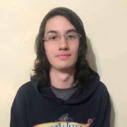

 I am Santiago, born and raised in Colombia. I have been living in the United States since 2016, and my goal is to become a great Game Developer and Software Engineer. I obtained my bachelor's degree as Game Designer from Full Sail University in 2018, and I have been working at Tilting Point Media since February 2019, as a Client Platform Engineer.
Video Games and learning are two of my biggest passions, I have co-develop and published 2 apps into the Mobile App Store and I am currently attentind to a Coding Bootcampt at UT Austin. I am eager to increase my pool of abilitest and be able to take into more development tasks. I am currently developing applications utilizing Unity3D, C#, Java and Objective C, but I will soon be able to also develop websites and much more.